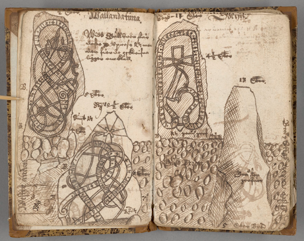
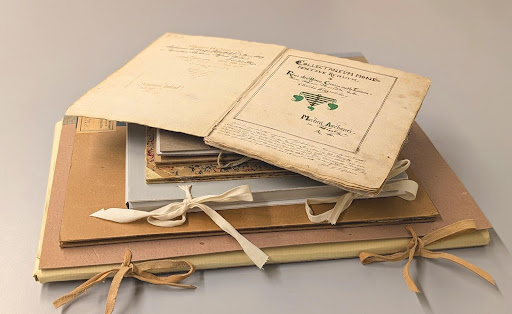
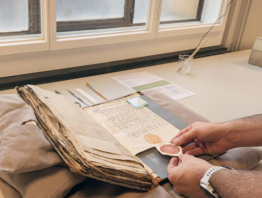
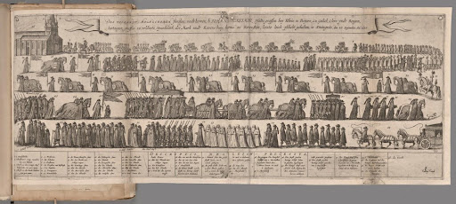

While KBLab uses modern heritage data to produce cutting edge AI models, we also work with developing the library’s research infrastructure for older heritage material and special collections. An ongoing collaboration with the National Heritage Board is digitizing and making accessible the earliest history of Swedish cultural heritage conservation. What preservation measures are necessary to safeguard these collections for the future, and what challenges and discoveries await in engaging with the material?

Figure 1: This page spread from Jonas Haquini Rhezelius, Runestones in Uppland (n.d. before 1666) - available in full here: Fc 8 - is one of the many sketch illustrations waiting to be found in KB’s F-collection.
How do we best preserve historical traces from oblivion? This question might feel particularly urgent today, as war, cyberattacks, and climate change create ever more acute threats to cultural heritage material (Bergvall 2023; Frederikzon and Haffenden 2023). But the challenge is far from new. Historians like Peter Fritzsche have described how shifting perceptions of time after the French Revolution—and concerns about what was vanishing—contributed to the establishment of memory institutions across Europe in the mid-19th century (Fritzsche 2004; Lowenthal 1985; Swenson 2013). In Sweden, the story of heritage management goes even further back (Jensen and Jensen 2018). As early as the 17th century, organized efforts were underway to collect, document, and preserve physical cultural heritage, exemplified by Johannes Bureus (1568–1652), Sweden’s first antiquarian, national archivist, and royal librarian (Åström 2023).
Reading Bureus’ 400-year-old manuscripts about his journeys to document rune stones gives us a tangible sense of this particular history (Källström 2024). His drawings, notebooks, and compilations of quotations remind those of us working with cultural heritage conservation today that we are part of a much longer tradition—one in which the similarities can often surprise, despite the obvious contrasts with our digital age. To paraphrase L. P. Hartley’s famous observation: the past may be a foreign country, but they didn’t always do things differently there.
Thanks to a recently started collaborative project between the National Library of Sweden (Kungliga biblioteket, KB) and the Swedish National Heritage Board (Riksantikvarieämbetet, RAÄ), it is now possible to explore Sweden’s early cultural heritage preservation efforts in an entirely new way. Funded by the Royal Swedish Academy of Letters, History, and Antiquities (Vitterhetsakademien), the project is digitizing and making accessible a significant portion of this history. For KB, this involves the entire F-collection of the library’s archival holdings, which includes Bureus’ manuscripts, while RAÄ is contributing a large number of archival documents from the 17th century to the late 19th century, drawn from its official archives.
Through digitization, this material—constituting the oldest history of RAÄ and the Academy of Letters—is being made available to researchers and the public alike. Via KB’s service Manuscripta and RAÄ’s Arkivsök, researchers and the general public will be able to explore a newly reunited collection, previously scattered across several archives, that bears witness to the work of our predecessors in preserving the past.

Figure 2: Storage capsules, covers and boxes from many generations coexist in the F-collection. Some have withstood the test of time well, while others need to be inspected and replaced.
What does it mean in practice to digitize historical manuscripts and works? Image capture is obviously a central part of digitally preserving and making the material accessible, but significant work also needs to be carried out before the manuscripts even reach our photographers. The following post gives an insight into how we work at KB to conserve and prepare manuscript collections for digitization.
Handling these materials in any way poses the risk of further damage, since the volumes and texts have been heavily used and are often extremely fragile. Many of them have lived rich and varied lives in the field before arriving in the library’s archives, and require careful and considered treatment. KB’s conservators and bookbinders therefore conduct thorough condition assessments and conservation measures before the material continues through the process. The close encounter with the material that this involves bears striking similarities to Bureus’ earlier explorations of ancient monuments and rune stones.

Figure 3: Reattaching a detached wax and paper seal.
First and foremost, each volume undergoes an evaluation before any further handling and image capture. Based on established criteria, the condition of the various components—bindings, sewing, text blocks, and media (e.g. ink)—is examined and documented. Different types of damage are graded according to their severity. For example, one volume might be in good condition with minor tears, while another might have extensive damage that risks worsening with handling. This evaluation determines whether conservation actions are needed and provides the best conditions for those handling the material during the rest of the digitisation process.
The assessment also considers whether the material is sensitive to changes in temperature and humidity, influencing where image capture can take place. For example, parchment covers tend to expand or shrink with climate fluctuations, and degraded ink risks cracking if pages “breathe” too much. Decisions are also made about whether new storage solutions are needed or if a damaged box must be replaced. In some cases, the conservators assist during digitization, such as in opening bindings at risk of breaking, loosening tight clasps, or carefully turning fragile pages.
KB’s F-collection is a diverse and heterogeneous assemblage of bound handwritten documents, sketches of buildings, runes and landscapes, prints, and traditional texts annotated with marginalia. Every object in the collection has the potential to surprise, whether with striking imagery or something more unusual.
The first time we opened Martin Aschaneus’ Collectaneum monetalium seu monetoscopia Sweogothica (n.d. before 1641) - Fb 17:2 - we discovered coins bound between the pages on parchment strips. While books containing objects might seem more challenging to digitize, in this case, the binding method is ideal: the coins are as easy to leaf through as the pages! The thrill of discovering little treasures like this has been a recurring highlight throughout the project, and this coin book, one of the first volumes assessed, got us off to an exciting start.
Figure 4: Unexpected coins nesting as part of the book. Aschaneus’ Collectaneum monetalium seu monetoscopia Sweogothica (n.d. before 1641), Fb 17:2.
We cannot turn back time, but with the right conservation measures and storage, we can extend the lifespan of materials at critical moments. Water damage mars the edges of many books. Ink spills have eaten through pages. Many bindings were originally temporary but have become permanent over time—easily mobile in the field but not particularly durable.
Even though digitization is a method of preserving collections, it is essential that the physical objects themselves, the original, remain in the best possible condition for future generations and research opportunities. With that in mind, tears and creases are among the most common damages that have needed to be repaired in the F-collection.
Figure 5: Shoring these fragments from ruin. Peringskiöld’s Om Heliga Birgitta (n.d.,1680-1720), Fh 26. Top right: before intervention. Bottom right: highlighting the damage of time. Left: after preservation measures.
A good example can be found in capsule Fh 26, Johan Peringskiöld’s Om Heliga Birgitta (n.d., between 1680 and 1720, yet to be digitized), which contains a letter where the same sheet of paper serves as both the writing surface and the envelope. At first glance, the letter appears somewhat worn, but as soon as we remove it from its capsule, we realize that it cannot be handled without falling apart (see red marking in figure 5). To make digitization possible, the folds need to be carefully smoothed out, and extremely thin Japanese paper is applied with adhesive to secure the different parts of the letter. This process is carried out with great care, and we avoid affecting the ink with the moisture introduced during treatment as much as possible.
Many of the volumes contain foldouts or plates that are larger than the rest of the pages and therefore had to be folded to fit within the covers. Johan Peringskiöld’s Konungatal eller förteckning på Svea och Göta Rikes konungar och drottningar (n.d. before 1720) - Fh 13 - is an example of a book that includes several large printed plates, one of which illustrates a procession and lists its participants. This particular plate is one of the largest, measuring a full 75 cm (see figure 6). Foldouts present several challenges both before and during digitization. The paper in the folds is often weakened, and long tears are common. These must be stabilized—not only to prevent the loss of material but also to ensure that text and images remain intact during digitization. It is also common for foldouts to have been improperly refolded over time, creating new creases that need to be smoothed out.

Figure 6: Mediating social order via extended diagrams. Peringskiöld, Konungatal eller förteckning på Svea och Göta Rikes konungar och drottningar, (n.d. before 1720), Fh 13.
We are still in the early stages of the project. Some digitized items have already been published through Manuscripta, and at the time of writing, our conservators and bookbinders have assessed and treated 90 of approximately 300 volumes. Many challenges lie ahead, given the diversity of the collection. We are also exploring the possibility of applying the Handwritten Text Recognition (HTR) models developed by our colleagues at the Swedish National Archives’ AI lab to further enhance the material’s searchability and accessibility. We suspect more surprises await and hope that as you explore the digitized collection, you make your own discoveries—and perhaps gain a deeper appreciation for the dedication with which Johannes Bureus and so many others worked to preserve the heritage that continues to enrich our landscapes, both physical and digital.
The material that has been digitized thus far in the project is freely available via Manuscripta. Follow the link to browse the collection!
Read more about the collaborative project that enables this digitization work, RiViH, via the Swedish National Heritage Board’s website (in Swedish).
See how the research team attached to the project is making use of the material with this essay on the National Heritage Board’s K-blogg (in Swedish).